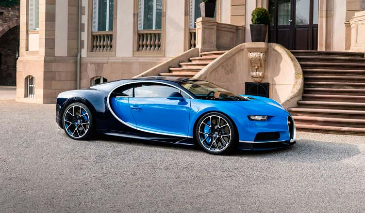
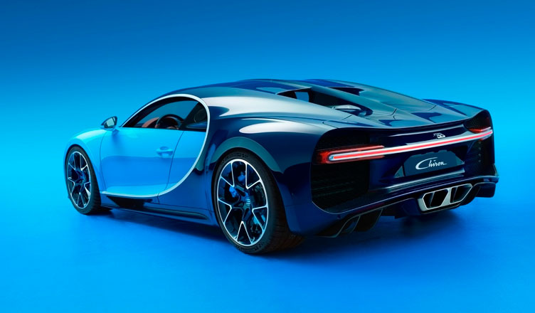

В конструкции шасси широко применяются алюминиево-титановый сплав и карбон
Модель Chiron не имеет выступающих в кормовой части воздухозаборников – они интегрированы в боковые панели гиперкара позади монокока и обеспечивают более эффективный забор воздуха. Еще один комплект располагается в нижней части переднего спойлера над сплиттером – набегающий поток охлаждает диски тормозной системы.
Во всем остальном Шерон очень схож, почти как родной брат, с Вейроном. Та же фирменная носовая часть с «линией Бугатти» из полированного алюминия, те же нарочито тяжеловесные формы кузовных очертаний, отсутствие капота в задней части. Но флагман получил абсолютно новую оптику, а форма крыши оптимизирована для снижения сопротивления потоку набегающего воздуха.
Нужно упомянуть про системы активной аэродинамики – увидеть их в обычном режиме нельзя, т. к. они выдвигаются при наборе высокой скорости. Выдвижное активное антикрыло и встроенные боковые интерцепторы повышают управляемость и прижимную силу, действующую на машину на сверхвысокой скорости.